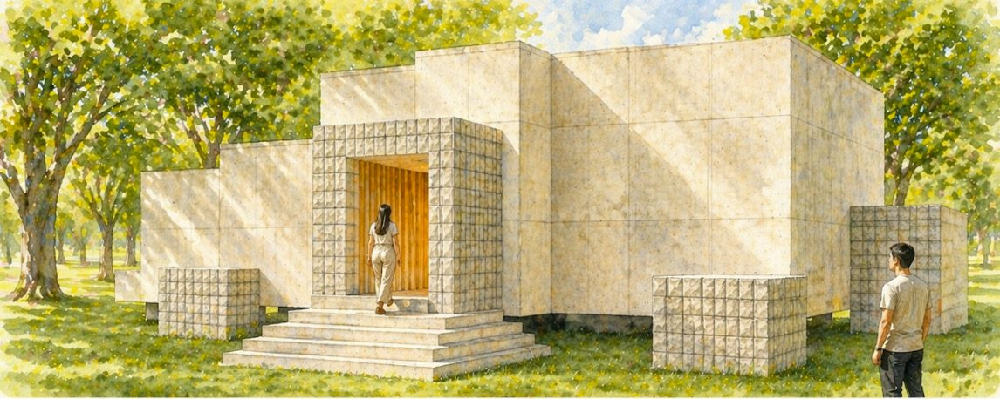
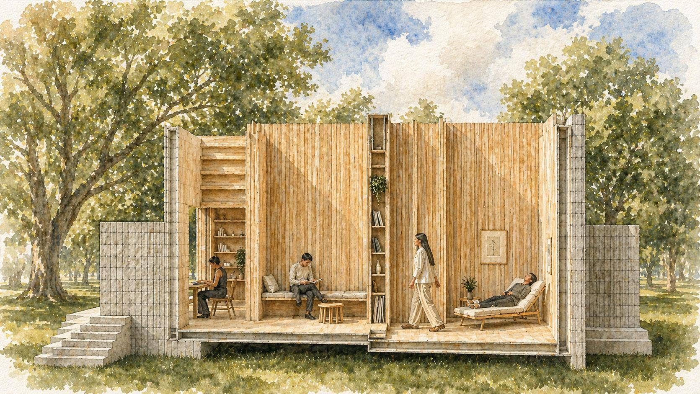
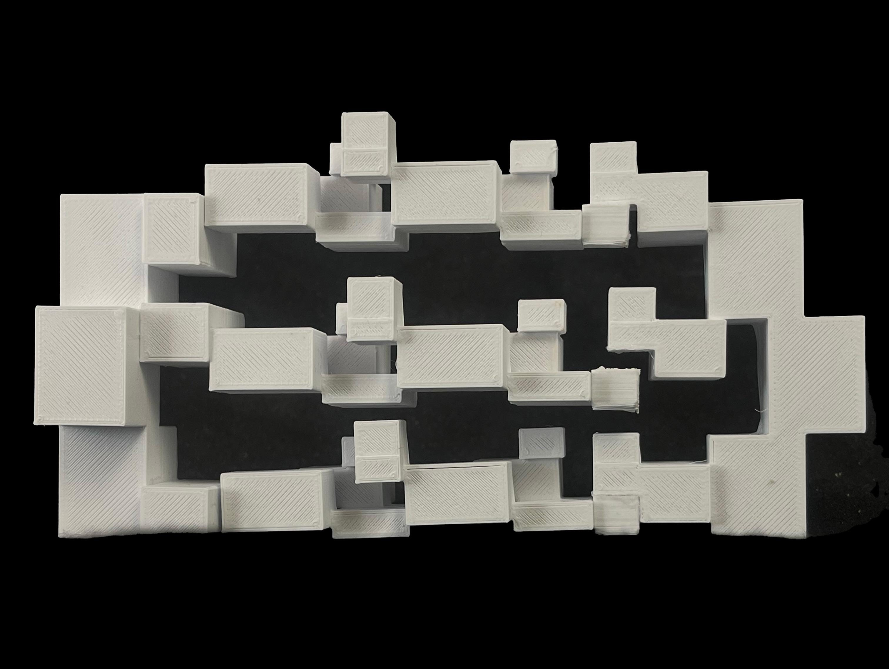
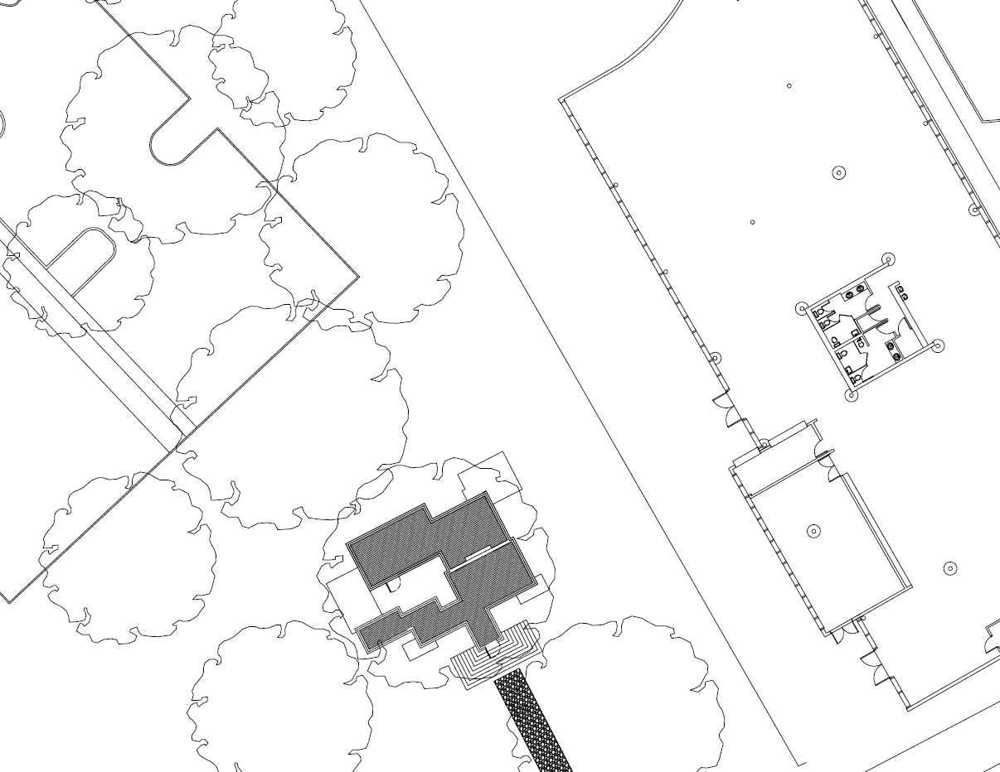
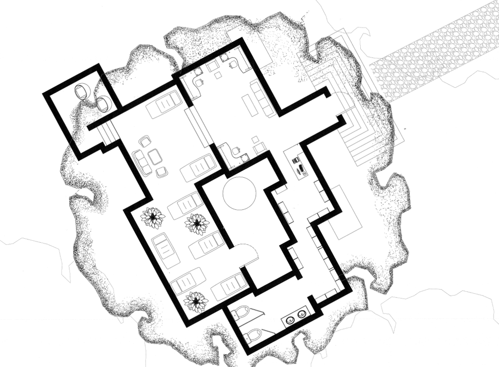

Projects / Project 01 · Elements of Architecture
The Space Thicket
A spatial condition shaped by density, hierarchy, and relationships.

The Space Thicket explores space as a condition shaped by density, hierarchy, and relationships. Closely spaced walls and vertical elements build a layered interior, compressing movement through narrow passages and releasing it into slightly more open zones. Wood reinforces the verticality and warmth of tree trunks.
At the site scale, surrounding trees establish the dominant spatial order. The architecture remains secondary and responds through its openings, orientations, and spatial sequences, keeping the landscape primary.



